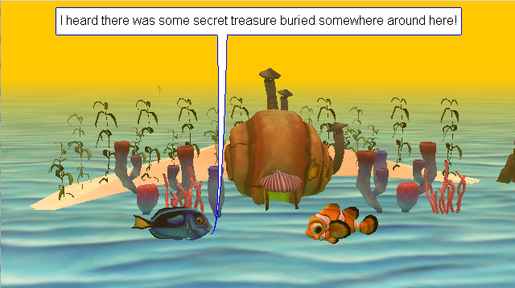

and a very sly fox. At the end, the... cake ends up being sentient?
Click the green flag to play the scene!
Which Starter Pokemon are You?
Of course, I had to create something to do with Pokemon!
I created this mobile quiz that will tell you what starter you are!
Here's the link!: Which Pokemon are you?
Aliens Chasing Ghosts
This is a game I made with code studio. This game titled Aliens chasing ghosts
.Move the player around and dodge the ghost's dangerous snowballs!
Here's the link: Ghosts Chasing Aliens
Finding Treasure

This is a project I made with Alice 3 Titled Finding Treasure. The evil
sharks are guarding the treasure hoard, but the nice dolphin comes to the rescue!
Line by Line

This is a project I made with p5.js. This is supposed
to be a self-portrait. I see the resemblance!
Line by Line: Animated
Building onto the last project, I was able to animate this sketch with p5.js!
Click on the link to see the animated version! Line by Line
Pastel Circle Attack!

The next p5.js project I made was Pastel Circle Attack!
You can play it in fullscreen by navigating to this link: Pastel Circle Attack!
My Other HTML Pages
Here are the links to my other HTML Pages!
My Home Page:Homepage
My Second Page:Second page
My Contage Page:Contact us!
I found the background image on newgrounds, and it was created by an artist named phallusbro